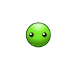
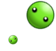
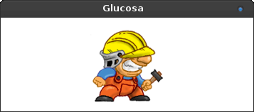

Glucosa
Una biblioteca para hacer juegos sobre sugar xo
Glucosa, azúcar para crear juegos
Glucosa es una biblioteca para hacer videojuegos. Su diseño es tan básico, que cabe completamente en un archivo .py
El objetivo de Glucosa, es funcionar sobre cairo y gtk para construir juegos muy sencillos para equipos XO OLPC.
¿Una mirada rápida?
Glucosa es super simple, conociendo unas pocas funciones se pueden hacer maravillas:
|
 |
|
 |
Instalación
La forma mas sencilla de probar la biblioteca es ejecutar algo así:
git clone git@github.com:hugoruscitti/glucosa.git
cd glucosa/examples
python sprite_keyboard_controlled.py

Usá el teclado para mover al personaje.
Usá el teclado para mover al personaje.
También existen varias alternativas de instalación en nuestra documentación
Documentación
La documentación completa del proyecto se encuentra en dos formatos diferentes: